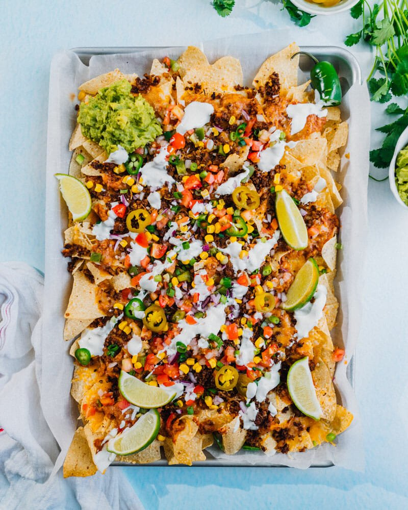

Nachos

Oven Baked Nachos
It's hard to beat a warm plate of homemade oven baked nachos on a cold winter day. Below I'll walk you through the steps to creating your own delicious meal!
First, here are a few things you'll need:
- (1) bag of tortilla chips
- (1) whole lime
- (2) fresh jalapenos
- (1) fresh avocado
- (1) can of corn
- (1) bag of shredded cheese or block of cheese
- (1) red pepper
- (1/2 lb) ground beef or jack fruit
To prepare the meal, simply follow these steps:
- Preheat the oven to 350 deg F
- Brown the meat or jack fruit
- cut fresh avocado and remove pit
- dice jalapenos and red pepper
- place one layer of chips on a baking dish
- evenly distribute the meat (or jackfruit), corn, and diced peppers
- cover the chips with cheese!
- bake in the oven for approximately 15 min (keep an eye on it and pull it out when the cheese looks melted)
- spread guacamole on cheaps or leave it to the side for dipping
- spread sour cream and / or salsa across the chips
- EAT